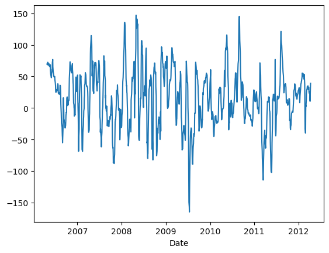
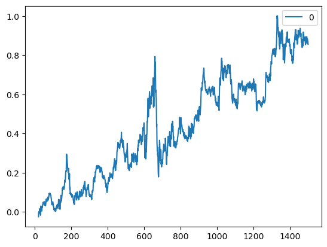
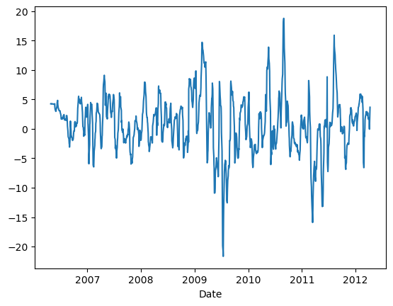
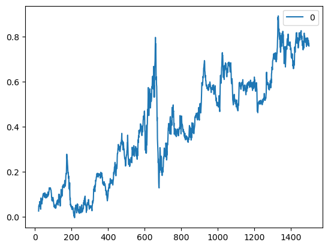
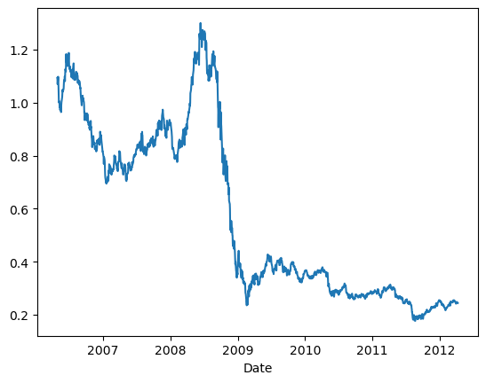
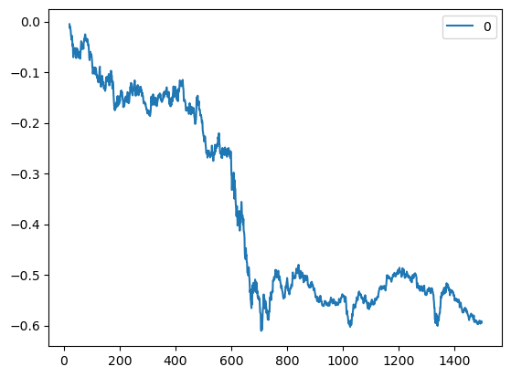

# Trading Price Spreadimport numpy as npimport pandas as pd#import matplotlib.pyplot as pltimport statsmodels.formula.api as smimport statsmodels.tsa.stattools as ts#import statsmodels.tsa.vector_ar.vecm as vmdf=pd.read_csv('datas/inputData_GLD_USO.csv')df['Date']=pd.to_datetime(df['Date'], format='%Y%m%d').dt.date # remove HH:MM:SSdf.set_index('Date', inplace=True)lookback=20hedgeRatio=np.full(df.shape[0], np.nan)# 计算对冲比率for t in np.arange(lookback, len(hedgeRatio)): regress_results=sm.ols(formula="USO ~ GLD", data=df[(t-lookback):t]).fit() # Note this can deal with NaN in top row hedgeRatio[t-1]=regress_results.params.iloc[1]print('hedgeRatio:',hedgeRatio)print('ts.add_constant(-hedgeRatio):',ts.add_constant(-hedgeRatio))# 计算投资组合净值yport=np.sum(ts.add_constant(-hedgeRatio)[:, [1,0]]*df, axis=1)yport.plot()# Apply a simple linear mean reversion strategy to GLD-USO# 实现简单的线性均值回归策略# 计算投资单位数。这个公式实际上是计算yport与其移动平均值的偏差，然后除以其标准差。# 这个值表示相对于其历史平均表现，今天的投资组合表现有多好（或有多差）。正值表示今天的表现优于平均水平，负值表示今天的表现低于平均水平。# 乘以-1是为了反转符号，使得正值表示买入，负值表示卖出。numUnits =-(yport-yport.rolling(lookback).mean())/yport.rolling(lookback).std() # capital invested in portfolio in dollars. movingAvg and movingStd are functions from epchan.com/book2print('numUnits:',numUnits)# np.tile(numUnits.values, [2, 1]):# np.tile函数用于重复数组的元素以创建新的数组。# numUnits.values是一个一维数组（假设numUnits只有一列），[2, 1]表示在行方向上重复两次，在列方向上重复一次。# 结果是一个二维数组，其中第一行是numUnits.values的复制，第二行也是numUnit.values的复制。positions=pd.DataFrame(np.tile(numUnits.values, [2, 1]).T * ts.add_constant(-hedgeRatio)[:, [1,0]] *df.values) # results.evec(:, 1)' can be viewed as the capital allocation, while positions is the dollar capital in each ETF.pnl=np.sum((positions.shift().values)*(df.pct_change().values), axis=1) # daily P&L of the strategyret=pnl/np.sum(np.abs(positions.shift()), axis=1)# np.cumprod 是 NumPy 库中的一个函数，用于计算数组的累积积（cumulative product）。# 累积积是指从数组的第一个元素开始，逐个元素相乘，直到当前元素为止的所有元素的乘积pd.DataFrame((np.cumprod(1+ret)-1)).plot()print('APR=%f Sharpe=%f'% (np.prod(1+ret)**(252/len(ret))-1, np.sqrt(252)*np.mean(ret)/np.std(ret)))
hedgeRatio: [ nan nan nan ... 0.15994561 0.18147442 nan]
ts.add_constant(-hedgeRatio): [[ 1. nan]
[ 1. nan]
[ 1. nan]
...
[ 1. -0.15994561]
[ 1. -0.18147442]
[ 1. nan]]
numUnits: Date
2006-04-26 NaN
2006-04-27 NaN
2006-04-28 NaN
2006-05-01 NaN
2006-05-02 NaN
...
2012-04-02 0.885846
2012-04-03 1.690156
2012-04-04 2.805475
2012-04-05 2.581271
2012-04-09 -1.475398
Length: 1500, dtype: float64
APR=0.109551 Sharpe=0.598899


# Trading Log Price Spread# 使用价格对数值的差分模式所产生的效应import numpy as npimport pandas as pdimport statsmodels.formula.api as smimport statsmodels.tsa.stattools as tsdf=pd.read_csv('datas/inputData_GLD_USO.csv')df['Date']=pd.to_datetime(df['Date'], format='%Y%m%d').dt.date # remove HH:MM:SSdf.set_index('Date', inplace=True)lookback=20hedgeRatio=np.full(df.shape[0], np.nan)for t in np.arange(lookback, len(hedgeRatio)):# regress_results=sm.ols(formula="USO ~ GLD", data=df[(t-lookback):t]).fit() regress_results=sm.ols(formula="USO ~ GLD", data=np.log(df[(t-lookback):t])).fit() # Note this can deal with NaN in top row hedgeRatio[t-1]=regress_results.params.iloc[1]# yport=np.sum(ts.add_constant(-hedgeRatio)[:, [1,0]]*df, axis=1)yport=np.sum(ts.add_constant(-hedgeRatio)[:, [1,0]]*np.log(df), axis=1)yport.plot()# Apply a simple linear mean reversion strategy to GLD-USOnumUnits =-(yport-yport.rolling(lookback).mean())/yport.rolling(lookback).std() # capital invested in portfolio in dollars. movingAvg and movingStd are functions from epchan.com/book2positions=pd.DataFrame(np.tile(numUnits.values, [2, 1]).T * ts.add_constant(-hedgeRatio)[:, [1,0]] ) # positions is the dollar capital in each ETF.pnl=np.sum((positions.shift().values)*(df.pct_change().values), axis=1) # daily P&L of the strategyret=pnl/np.sum(np.abs(positions.shift()), axis=1)pd.DataFrame(np.cumprod(1+ret)-1).plot()print('APR=%f Sharpe=%f'% (np.prod(1+ret)**(252/len(ret))-1, np.sqrt(252)*np.mean(ret)/np.std(ret)))
APR=0.099520 Sharpe=0.553442


# Trading Ratio# 相应的价格比率模式所生成的效应与价差模式和自适应对冲比率模式相比较而言，其看起来根本就不是不平稳的。所以，如果我们发现相关的均值回归模式的表现不佳，且生成负的年化收益率时，我们都不应该感到惊讶，import numpy as npimport pandas as pddf=pd.read_csv('datas/inputData_GLD_USO.csv')df['Date']=pd.to_datetime(df['Date'], format='%Y%m%d').dt.date # remove HH:MM:SSdf.set_index('Date', inplace=True)lookback=20ratio=df['USO']/df['GLD']ratio.plot()#yport=np.sum(ts.add_constant(-hedgeRatio)[:, [1,0]]*np.log(df), axis=1)#yport.plot()# Apply a simple linear mean reversion strategy to GLD-USOnumUnits =-(ratio-ratio.rolling(lookback).mean())/ratio.rolling(lookback).std() # capital invested in portfolio in dollars. movingAvg and movingStd are functions from epchan.com/book2positions=pd.DataFrame(np.tile(numUnits.values, [2, 1]).T * np.ones((numUnits.shape[0], 2)) * np.array([-1, 1]) ) # positions in dollar investedpnl=np.sum((positions.shift().values)*(df.pct_change().values), axis=1) # daily P&L of the strategyret=pnl/np.sum(np.abs(positions.shift()), axis=1)# (np.cumprod(1+ret)-1).plot()pd.DataFrame((np.cumprod(1+ret)-1)).plot()print('APR=%f Sharpe=%f'% (np.prod(1+ret)**(252/len(ret))-1, np.sqrt(252)*np.mean(ret)/np.std(ret)))
APR=-0.140674 Sharpe=-0.749583


# Bollinger Band Mean Reversion Strategy# 布林线带均值回归策略import numpy as npimport pandas as pd#import matplotlib.pyplot as pltimport statsmodels.formula.api as smimport statsmodels.tsa.stattools as ts#import statsmodels.tsa.vector_ar.vecm as vmdf=pd.read_csv('datas/inputData_GLD_USO.csv')df['Date']=pd.to_datetime(df['Date'], format='%Y%m%d').dt.date # remove HH:MM:SSdf.set_index('Date', inplace=True)lookback=20hedgeRatio=np.full(df.shape[0], np.nan)for t in np.arange(lookback, len(hedgeRatio)): regress_results=sm.ols(formula="USO ~ GLD", data=df[(t-lookback):t]).fit() # Note this can deal with NaN in top row hedgeRatio[t-1]=regress_results.params.iloc[1]yport=np.sum(ts.add_constant(-hedgeRatio)[:, [1,0]]*df, axis=1)yport.plot()# 这里我们需要注意的是：多单入场信号longsEntry与空单入场信号shortsEntry是T×1型的逻辑数组，多单离场信号longsExit和空单离场信号shortsExit也是如此。# 我们以numUnitsLong函数将与多单相关的单位投资组合的数量单位进行初始化的处理，这是一个T×1型的数组，然后，在出现多单入场信号之时，设置其值为1，而在多单离场信号出现之时，则设置其值为0；# 而对于空单的数量单位，我们则进行反向设置即可；在没有入场、离场信号的时间序列之内，我们使用失踪数据填充函数fillMissingData来提取前一天的数量单位（fillMissingData函数从数组的第二行开始，# 并以前一行各单元格的价值覆盖本期单元格的非数变量（NaN值），相应程序可以从我的网站下载）。一旦我们计算出代表多单数量单位的numUnitsLong函数和代表空单单位数量的numUnitsShort函数的数值，# 我们就可以计算相关数量单位的净值。# Bollinger band strategyentryZscore=1exitZscore=0MA=yport.rolling(lookback).mean()MSTD=yport.rolling(lookback).std()zScore=(yport-MA)/MSTDlongsEntry=zScore <-entryZscorelongsExit =zScore >-entryZscoreshortsEntry=zScore > entryZscoreshortsExit =zScore < exitZscorenumUnitsLong=np.zeros(longsEntry.shape)numUnitsLong[:]=np.nannumUnitsShort=np.zeros(shortsEntry.shape)numUnitsShort[:]=np.nannumUnitsLong[0]=0numUnitsLong[longsEntry]=1numUnitsLong[longsExit]=0numUnitsLong=pd.DataFrame(numUnitsLong)# numUnitsLong.fillna(method='ffill', inplace=True)numUnitsLong.ffill(inplace=True)numUnitsShort[0]=0numUnitsShort[shortsEntry]=-1numUnitsShort[shortsExit]=0numUnitsShort=pd.DataFrame(numUnitsShort)# numUnitsShort.fillna(method='ffill', inplace=True)numUnitsShort.ffill(inplace=True)numUnits=numUnitsLong+numUnitsShortpositions=pd.DataFrame(np.tile(numUnits.values, [1, 2]) * ts.add_constant(-hedgeRatio)[:, [1,0]] *df.values) # [hedgeRatio -ones(size(hedgeRatio))] is the shares allocation, [hedgeRatio -ones(size(hedgeRatio))].*y2 is the dollar capital allocation, while positions is the dollar capital in each ETF.pnl=np.sum((positions.shift().values)*(df.pct_change().values), axis=1) # daily P&L of the strategyret=pnl/np.sum(np.abs(positions.shift()), axis=1)pd.DataFrame((np.cumprod(1+ret)-1)).plot()print('APR=%f Sharpe=%f'% (np.prod(1+ret)**(252/len(ret))-1, np.sqrt(252)*np.mean(ret)/np.std(ret)))
# Kalman Filter Mean Reversion Strategyimport numpy as npimport pandas as pdimport matplotlib.pyplot as plt#import statsmodels.formula.api as smimport statsmodels.tsa.stattools as ts#import statsmodels.tsa.vector_ar.vecm as vmdf=pd.read_csv('datas/inputData_EWA_EWC_IGE.csv')# 删除列'IGE'df = df.drop('IGE', axis=1)df['Date']=pd.to_datetime(df['Date'], format='%Y%m%d').dt.date # remove HH:MM:SSdf.set_index('Date', inplace=True)x=df['EWA']y=df['EWC']# 对x进行预处理，添加一列常数项以适应可能的截距偏移x=np.array(ts.add_constant(x))[:, [1,0]] # Augment x with ones to accomodate possible offset in the regression between y vs x.# 初始化一些变量，如卡尔曼滤波器的状态协方差矩阵R、预测误差协方差矩阵P、回归系数beta、过程噪声协方差矩阵Vw和观测噪声协方差矩阵Ve。delta=0.0001# delta=1 gives fastest change in beta, delta=0.000....1 allows no change (like traditional linear regression).yhat=np.full(y.shape[0], np.nan) # measurement predictione=yhat.copy()Q=yhat.copy()# For clarity, we denote R(t|t) by P(t). Initialize R, P and beta.R=np.zeros((2,2))P=R.copy()beta=np.full((2, x.shape[0]), np.nan)Vw=delta/(1-delta)*np.eye(2)Ve=0.001# Initialize beta(:, 1) to zerobeta[:, 0]=0# 使用卡尔曼滤波器迭代更新回归系数beta。在每个时间步长t，首先根据上一时刻的beta值更新R，然后计算预测值yhat、预测误差e和观测噪声协方差Q。接着计算卡尔曼增益K，并使用它来更新beta和P# Given initial beta and R (and P)for t inrange(len(y)):if t >0: beta[:, t]=beta[:, t-1] R=P+Vw yhat[t]=np.dot(x[t, :], beta[:, t])# print('FIRST: yhat[t]=', yhat[t]) Q[t]=np.dot(np.dot(x[t, :], R), x[t, :].T)+Ve# print('Q[t]=', Q[t])# Observe y(t) e[t]=y.iloc[t]-yhat[t] # measurement prediction error# print('e[t]=', e[t])# print('SECOND: yhat[t]=', yhat[t]) K=np.dot(R, x[t, :].T)/Q[t] # Kalman gain# print(K) beta[:, t]=beta[:, t]+np.dot(K, e[t]) # State update. Equation 3.11# print(beta[:, t])# P=R-np.dot(np.dot(K, x[t, :]), R) # State covariance update. Euqation 3.12 P=R-np.dot(np.outer(K, x[t, :]), R) # Thanks to Matthias for chaning np.dot -> np.outer!# print(R)plt.plot(beta[0, :])plt.plot(beta[1, :])plt.plot(e[2:])plt.plot(np.sqrt(Q[2:]))# 根据预测误差e和观测噪声协方差Q来确定买入和卖出的信号（longsEntry、longsExit、shortsEntry和shortsExit）。longsEntry=e <-np.sqrt(Q)longsExit =e >0shortsEntry=e > np.sqrt(Q)shortsExit =e <0# 计算每个时间步长的持仓数量（numUnitsLong和numUnitsShort），并将它们合并为一个总持仓数量numUnits。numUnitsLong=np.zeros(longsEntry.shape)numUnitsLong[:]=np.nannumUnitsShort=np.zeros(shortsEntry.shape)numUnitsShort[:]=np.nannumUnitsLong[0]=0numUnitsLong[longsEntry]=1numUnitsLong[longsExit]=0numUnitsLong=pd.DataFrame(numUnitsLong)# numUnitsLong.fillna(method='ffill', inplace=True)numUnitsLong.ffill(inplace=True)numUnitsShort[0]=0numUnitsShort[shortsEntry]=-1numUnitsShort[shortsExit]=0numUnitsShort=pd.DataFrame(numUnitsShort)# numUnitsShort.fillna(method='ffill', inplace=True)numUnitsShort.ffill(inplace=True)numUnits=numUnitsLong+numUnitsShort# 根据持仓数量和回归系数beta构建投资组合，并计算每日盈亏pnl和投资组合的累计收益率。positions=pd.DataFrame(np.tile(numUnits.values, [1, 2]) * ts.add_constant(-beta[0,:].T)[:, [1,0]] *df.values) # [hedgeRatio -ones(size(hedgeRatio))] is the shares allocation, [hedgeRatio -ones(size(hedgeRatio))].*y2 is the dollar capital allocation, while positions is the dollar capital in each ETF.pnl=np.sum((positions.shift().values)*(df.pct_change().values), axis=1) # daily P&L of the strategyret=pnl/np.sum(np.abs(positions.shift()), axis=1)(np.cumprod(1+ret)-1).plot()print('APR=%f Sharpe=%f'% (np.prod(1+ret)**(252/len(ret))-1, np.sqrt(252)*np.mean(ret)/np.std(ret)))#APR=0.313225 Sharpe=3.464060